Landauer machine
Pub. 2026 Jul 15In 1961 Roger Landauer argued that any logically irreversible computation must produce a minimum amount of heat. The argument at its most basic: consider a particle in one of two equivalent but distinct states called "0" and "1". If that particle is then forced to be in just the "0" state, effectively "erasing" or "zeroing" the particle, that operation reduces the particle's number of states by half, decreasing its entropy by $\ln(2)$. The entropy of the universe must have increased by at least $\ln(2)$ in kind, and this is envisioned by Landauer as a transfer of at least $k T \ln(2)$ joules of heat into the universe.
Let's put aside whether this is true or not in the general case. I want to make a model of a machine that does operate at this limit, what I'm calling a "Landauer machine".
There are many models out there of reversable computers: ones that generate no heat at all. There are fewer models of Landauer machines, but they do exist. [todo: examples? Maybe talk about Landauer's own model?]
The model
The model described here goes back to our thermodynamic roots. It does computation on gas particles in containers by compressing and expanding them in various ways.
Some papers I've read hand-wave away some details of how a computer like this would work. You have to be careful though. You can't just attach any old "sensor" to the boxes and decide what operations to perform, because that implies a form of computation, and you'd have to argue that process is itself reversible.
So I'm deliberate in my choice of primitives:
- Boxes can have removable/insertable dividers.
- Boxes can be separated and rejoined.
- The walls of the boxes can be rigid or moveable as need be.
- Different parts of the computation can take place in different heat baths at different pressures as the situation demands. Boxes are transfered between computations with different heat bath requirements by physically moving them out of one and into another, which takes zero work.
- We can perform isothermal compression/expansion to a box in finite time. Or close enough to finite.
- Boxes can be connected by tubes. These tubes are assumed to have essentially zero volume, and so gass moves through them essentially instantly.
- We can have pistons that travel a pre-specified distance.
- If those pistons have to do work on its load to travel its distance, it can. If the load does work on the piston instead, that's also allowed. They're allowed to dynamimcally supply or receive however much is necessary to more its distance. However, they aren't able to dynamically choose whether to give or receive work, or to receive work in two different directions.
Building blocks
NOT
Probably the simplest example of a reversible operation is NOT:
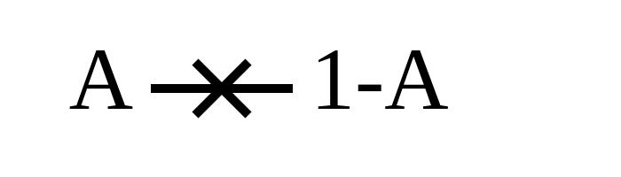
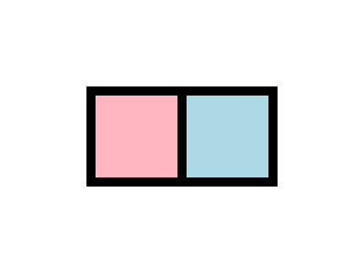
This gate hopefully explains why we're representing bits this way. Dual-rail representation works better when conservation of matter is a concern.
SET / RST
The simplest example of an irreversible operation is RST:
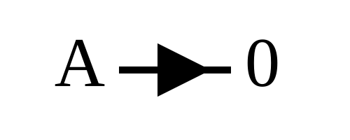
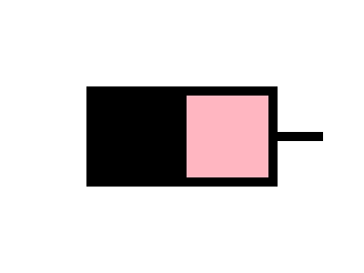
This is a classic thermodynamics example. The dividing wall is removed between the two halves, doing a free expansion on the gass. Pressure is halved, volume doubled, temperature remains the same. Then a piston isothermally compresses into the correct half, leaving behind a vaccum in the other. This compression performs $k T \ln(2)$ joules of work on the gass. But since we're keeping a constant temperature, the energy of our monoatomic gass is also contant, and so that $k T \ln(2)$ joules radiates off as heat, exactly as the Landauer limit predicts.
Alternatively, the entropy of a particle in a box is
$$S = k \ln \left( V \left( \frac{4 \pi m U}{3 h^2} \right)^{3/2} \right) + \frac{5}{2}.$$
When the wall is removed, $V$ doubles, $m$ and $U$ stays the same, so $\Delta S = k \ln(2)$. After the compression phase, $V$ halves again, $U$ stays the same because the compression is isothermal, so $\Delta S = -k \ln(2)$ again. The first entropy increase comes free, but then the second can't happen without transfering it somewhere else, here in the form of $T \Delta S$ units of heat.
This is the way this operation is usually described in textbooks. But for our purposes we're going to doing something a little different, to make later steps easier:
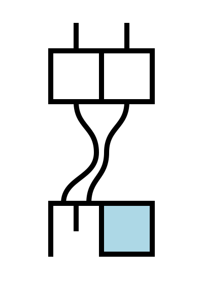
This alternate RST consumes the same amount of energy and generates the same amount of heat. One difference is that this isn't required to happen in a vaccum.
Another important operation is SET, which sets the bit to one:
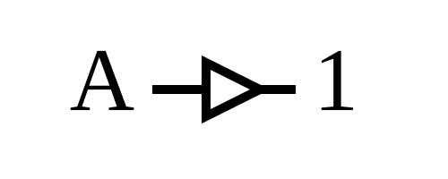
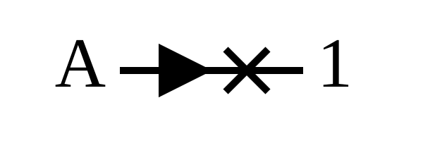
These 3 operations, along with the identity operation, fills out all $\mathbb{B}^\mathbb{B}$.
CNOT
$\mathbb{B}^2 \rightarrow \mathbb{B}$ operations aren't that interesting by themselves, since they always require unconditional erasure and heat. We're looking instead at operations where the output replaces one of the inputs.
The simplest nontrivial reversible operation of this kind is the CNOT or Toffoli gate:
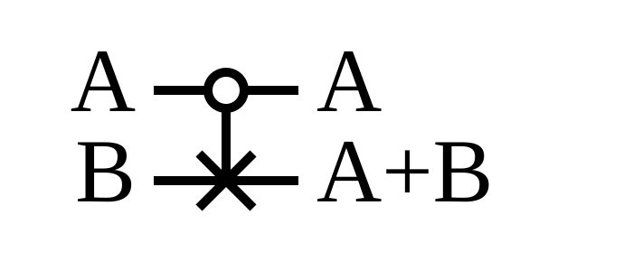

You can think of this gate as implementing XOR.
CSET / CRST
The cooresponding 2-input irreversible operation is the controlled set / controlled reset:
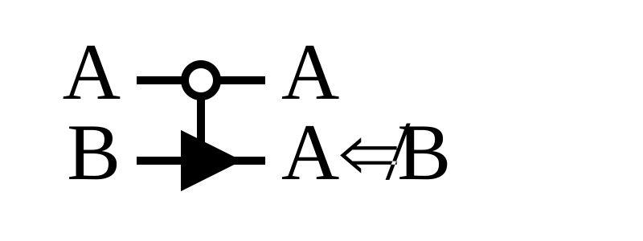
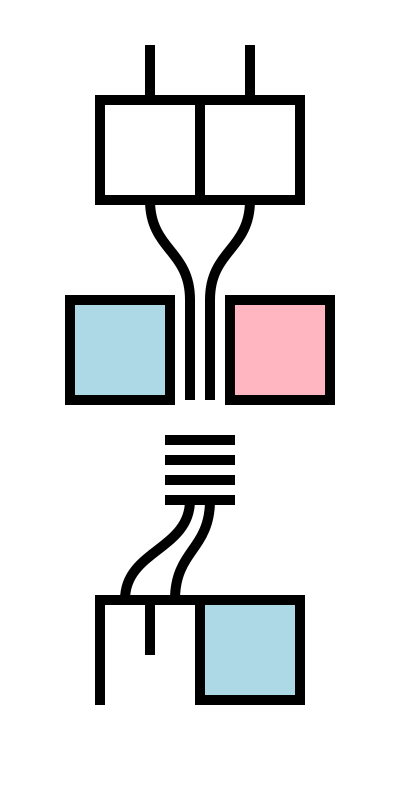
CRST is equivalent to the negated converse gate, which I don't know any cool abbreviation for.

CSET is equivalent to OR.
The construction of these gates has the property that work is done, and therefore heat produced, only when A=1. When A=0, the output matches the input, so is reversible and no heat should be produced. In addition, heat is always produced when A=1, even if B=1 (or 0 in the case of CRST).
With these you can implement all $\mathbb{B}^2 \rightarrow \mathbb{B}$ logic gates. For completeness, here are the 8 main logic gates (the rest can be made by adding a NOT to the end of the B line):
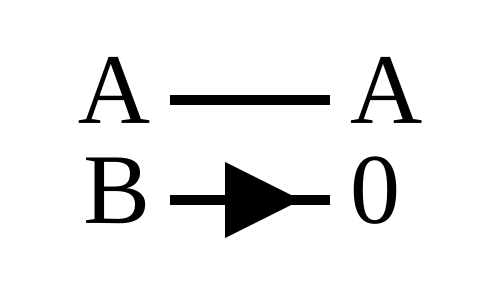
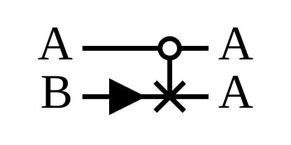
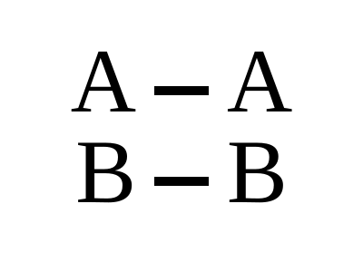
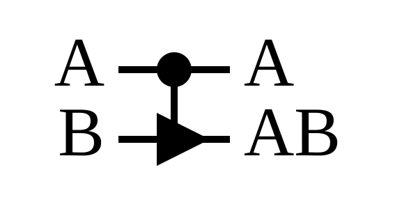
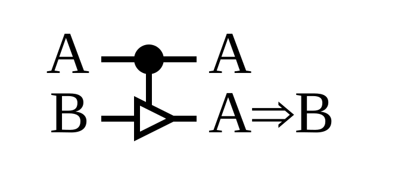
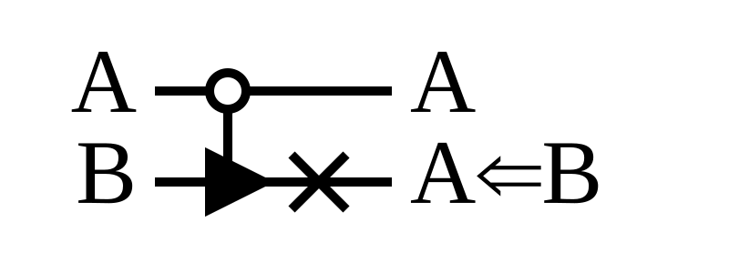
Fanout
Just because we have XOR and AND, doesn't mean we're in the clear. In classical logic NAND is universal, but not necessarily here. One of the ways that NAND can be universal is due to wire fanout. For example, here's the classic construction of a NOT gate using a NAND gate, and what happens when you try to do that in our computer:
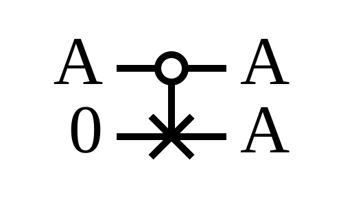
The takeaways are that 1) fanout results in either memory usage or heat, and 2) we can't just convert traditional circuit diagrams to their Landauer machine equivalents and expect them to operate at the landauer limit.
3 input gates
The construction we're using, where the control bits connect wires that route to the correct destination boxes, can extend to multiple control bits. It can even extend to mix-matched control bits!
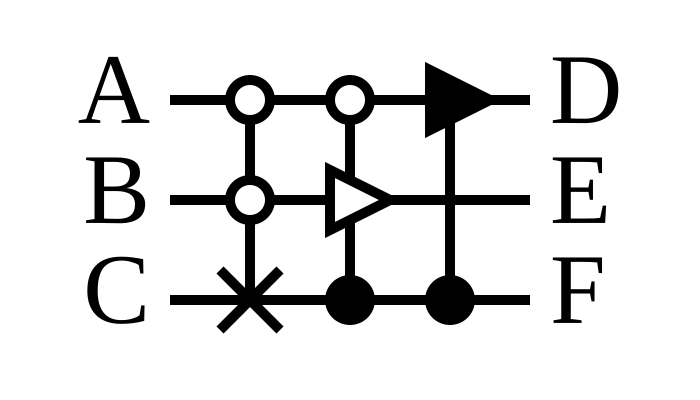
The question of whether a CNOT or CRST or CSET can control on the target bit is a sensitive subject. Luckily, we don't need to poke that bear for anything we're discussing below.
Full adder
Let's make a full adder!
There are reversible full adders out there:
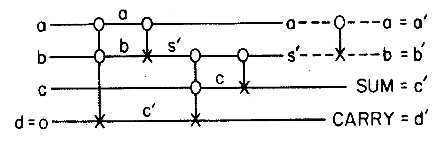
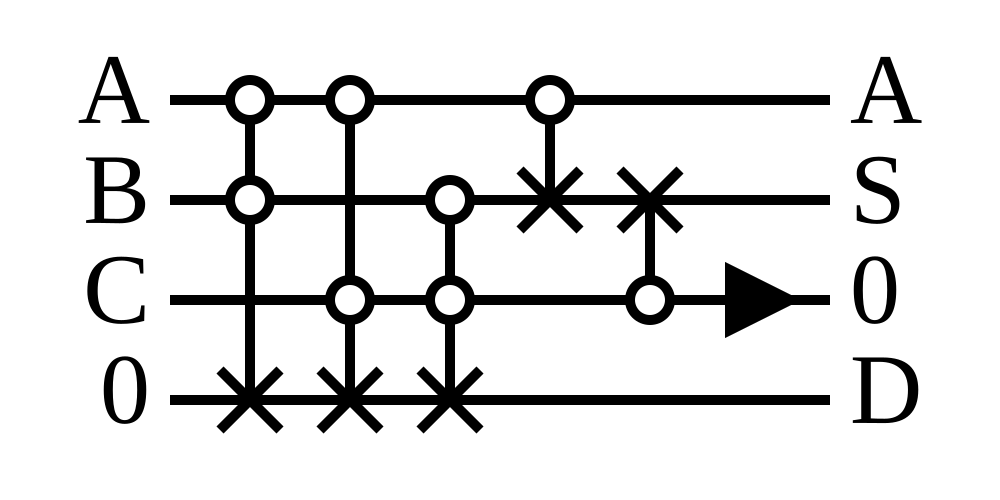
Pretty cool, but not what I want. In these circuits, an extra 0 bit is introduced, and a 3-bit input results in a 4-bit output. This means that adding two 8-bit numbers will result in another 8-bits of memory getting trashed or unconditionally RST.
We can do better. Like on the right image, I want to preserve A and replace B with S with C as a "working bit", evocative of how the intel 8080's ADD instruction always adds into an accumulator.
Take a look at the truth table for this:
A B C | A' S' C'
--------------------
0 0 0 | 0 0 0
0 0 1 | 0 1 0 <--
0 1 0 | 0 1 0 <--
0 1 1 | 0 0 1
1 0 0 | 1 1 0
1 0 1 | 1 0 1 <--
1 1 0 | 1 0 1 <--
1 1 1 | 1 1 1
Pointers are towards the noninvertible lines. A good adder circuit for a Landauer machine would be generate $k T \ln(2)$ heat for those inputs, and no heat for the others.
This circuit fits the bill:
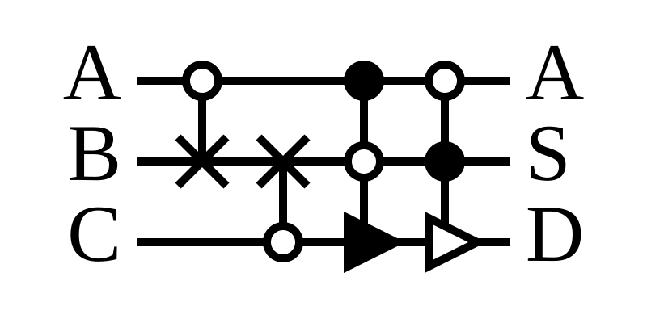

Despite having both a CSET and a CRST, only one can trigger on any addition.
Okay, enough stalling, here's the animation for a full ripple carry adder:

This can be made better. Chaining 1-bit adders together is less heat-efficient than constructing larger adders from scratch. For example, here's a 2x2 bit adder:
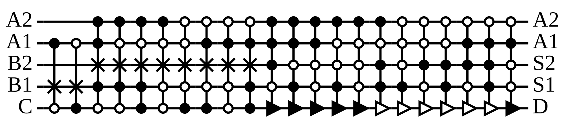

This circuit will, at max, perform one SET or RST per addition, with an average rate of 0.75 per two random inputs. This is better than the equivalent chained 1-bit adders, which will perform a max of 2 and an average of 1 per two random inputs.
This pattern keeps going. The higher the n-bit adder, you can construct the circuit to do at max 1 SET or RST per addition, but the probability of one happening gets closer to 1 for two random inputs.
At the limit, though, you can ditch the idea of a composing small adder circuits, and just make one large n-bit adder all at once. This is breaks the pattern, because $(A, B) \rightarrow (A, A + B)$ is reversible and because there's no longer an input carry bit. So such a circuit should burn generate no heat.
In an actual Landauer machine, where the addition circuitry would be reused for each addition, there would have to be an extra RST at the start to zero out the carry bit, so for practical purposes 1 should be added to the above numbers.
Endothermic computation
There's an old response to Landauer's limit, attributed to [todo: beckett 1982?]. It goes something like this:
It may be true that physically irreversible operations increase entropy, and logically irreversible operations generate heat, [todo]. But it is NOT true that logically irreversible operations are always physically irreversible.
An example of this is isothermal compression.
[todo: reversible computing at a larger scale?]
Monte carlo
I have a very special place in my heart for monte carlo algorithms. So instead of running computations backwards, another option is to generate random bits and directly compute something.
For this posts's finale, we're going to calculate $pi$ endothermally, using the old circle-in-square rejection sampling trick. It's a simple algorithm that doesn't require many operations: generate two real numbers between 0 and 1 uniformly, square them, and add them. Then take the carry bit from the last addition, and add it to an accumulator. Repeat this $m$ times, and the expected value of the accumulator is $4 \pi/m$.
You can absorb $k T \ln(2)$ heat from the suroundings, generating the same amount of energy, to randomize one bit from an initial 0 state. For the purposes here I'm going to say that 1 unit of "waste heat" (1 WH) equals $k T \ln(2)$.
Generating two random 8-bit numbers $x$ and $y$ and interpretting them as fixed point representations of $2^{-8} x$ and $2^{-8} y$, generates 16 WH.
Squaring would act like mulh, multiplying the 8-bit number by iteself to produce a 16-bit number, and then returning the high 8-bits, only without the intermediate. I haven't designed one, but my calculations say that it should burn 4 WH at worse, and ~0.71 WH on average.
We've gone over additions: the most optimal 8-bit adder with an output carry bit will generate 1 WH to clear the output carry bit. However, without a carry bit it would generate 0 WH! So here we'd make some custom circuitry that adds an 8-bit number to a 16-bit number for 0 WH, and use it on $x + (2^8 accumulator + y)$. This takes care of both additions!
To repeat the process, you can't zero our x and y, because that would burn all of our 16 WH. But we don't need to do that. RST followed by reverse RST burns 0 WH and re-randomizes the bits. And you're ready to go again!
I'm not taking into account a loop counter, since I don't know what to do when the counter reaches 0.
All in all, each loop burns ~$2 \cdot 0.71$ WH = 1.42 WH on average, so you can do ~11 iterations on average before you're no longer endothermic. With 11 iterations you will calculate a value of pi between [2.5, 4] 90% of the time, and between [2.9, 3.3] only 50% of the time, lol.
Increasing the bitcount helps. The WH for squaring n-bit numbers seems have a worst case of $0.5 log_2(n)$ WH and, and converges to an average of ~0.73 WH. So expanding these circuits to, say, 32 bits would give you 45 iterations on average! But, at the expense of massively increased circuitry complexity, because the adders and multipliers I'm assuming here have sizes that scale exponential in n.
https://www.feynmanlectures.caltech.edu/I_46.html
https://www.cs.princeton.edu/courses/archive/fall05/frs119/papers/feynman85_optics_letters.pdf